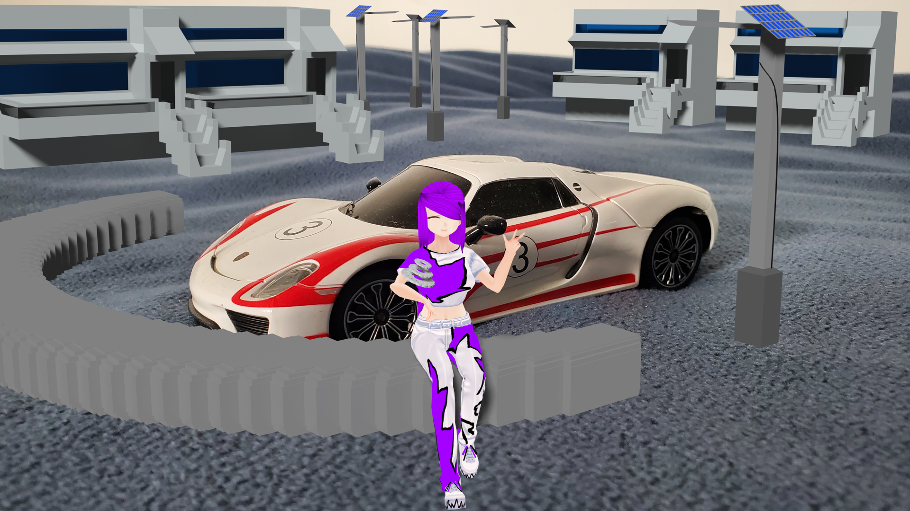
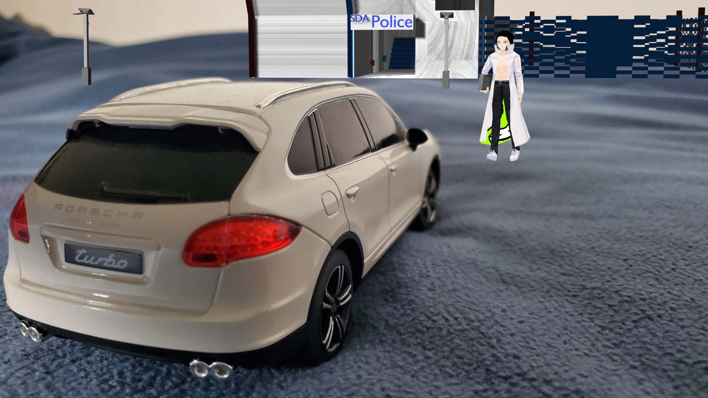
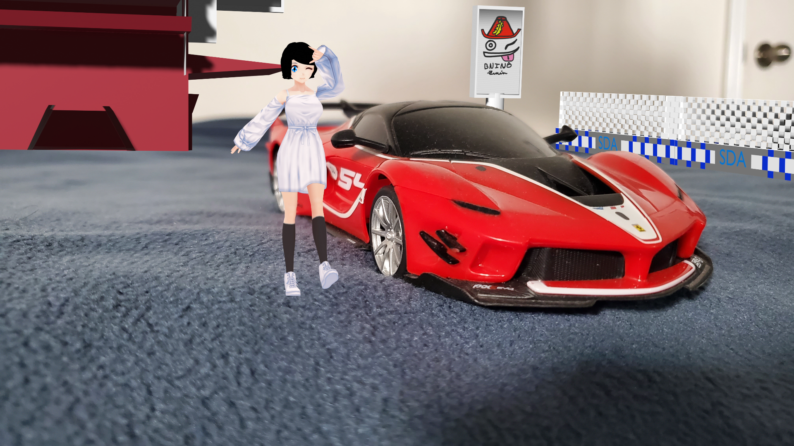
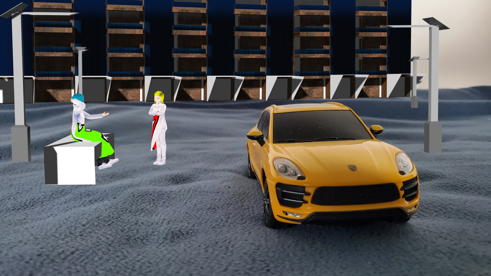
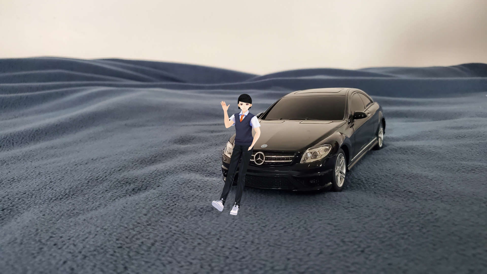

YOU MADE IT ! well let us welcome you to The Official Website of Roadbeasts?(Rcworld)edition Anime. By Scrolling on this website, you will understand the STORY OF THE ANIME
not only but also some of the main Characters of The Anime.DON'T WORRY THEIR WILL BE NO SPOIL, because obviously why putting
them ... Sorry about that. Anyways , you will find our Other Channels' description , i am sure you will love it . ENJOY SCROLLING and learning also...
Schedule of HW Roadbeasts VIDEOS TIME UPLOADING :
Day :
Monday
Wednesday
Friday
Sunday
Time :
7 Pm KSA
7 Pm KSA
5 am KSA
10 am KSA
The Story :
Sara is the CEO Of The Association called 'Roadbeasts' Where she helps people from protecting their rights , fighting criminals, doing
groceries for poeple who are sick etc... One day she gets a call from Hassan , the second richest person after SDA of course , telling her that
his daughter went to a wild adventure and never came back, his doughting on 'Wealth' a place where you get so much distracted that you loose your
way where came from. In order to get to wealth , Sara has to collect keys , or that are known as 'The Winds and Hints'. Basically she has to solve
mysteries, the more she does , the closer she gets to wealth. But what will happen if she failed on solving one ? That's what pisses Sara , because
she doesn't know , in fact even Hassan hasn't told her everything about wealth. Good to know that she is not alone , at least with her 2 members , Zakaria and Aya
both helping her on the mission. But wait , that's not all , SDA or Secret Department Agency is the government of Sara's Country, and the SDA police department
is after her for what she is doing , they have their reasons why they need to stop Sara. But Hey ! The moral of the story is : Sara needs to learn about each location of
The Winds and Hints , not getting cought by SDA Police Department and much more , which means she needs to be startegic and knows what she's up to , right? Enoy what's gonna
happen...
The Characters :

Introducing one of the most brave characters, Sara.She is the CEO Of Roadbeasts, she will lead this mission. She is a hard worker person, doesn't do a lot of entertainment,
and she doen't need that to be honest, not right now , as she has no idea what's coming.

Yahya.Leader of the SDA Police Department. Wait a mimute isn't being a policeman consist of helping the citizens? But wait Sara is already taking care of that. Hold up for a sec
what is going on here ? Well my friend , if you have these kind of quetions , then you know nothing about SDA. Anyways as a leader , Yahya is in charge of stopping Sara from what she does, it's
an order from his supperiours. Which means he has no choice . The real quetion is , what will he do about stopping his own sister?
IF YOUR CURIOUS ABOUT SDA , WE HAVE A SEPERATE BOOK THAT TALKS ABOUT THAT , WITH ANOTHER STORY OF COURSE, IT'S FREE NO WORRIES

Aya. STOP STARRING AT MY CRUSH (LOL). NO but like let's be honest , first of all , she is the opposit of Sara , inspite of being a member of the Roadbeasts ,
she loves hanging out and having fun,she doesn't care about what life will throw at her , as she is always ready for any challenges , also she is the best friend of Sara, yeah that
is another point i was about to forget.

Anas.Intoducing Sara's other brother, he is younger than yahya and he is working in SDA Police Department like Yahya, except that he hasn't the same position.Anyways once again it's gonna be
very intersting to see his reaction toward stopping his sister, also working with his brother, i don't want to spoil, stay tuned.

Zakaria. Introducing a new member to not only Roadbeasts but also to Fine city, this guy has just been transferred from his world Morocco to Sara's. Yeah ! I don't think he is ready
for what Sara has just started to be facing , also i do want to mention that he is a not quitter , that's good as he need that mind set. To be honest once again, he is in the same position as you are,
you know , since he is new, he doen't know much about Fine city or what SDA is , so i think you will get familiar with that character a lot , i don't know, just saying...
SDA
Or Secret Department Agency , is the government of Fine city , the country of Sara, Yahya, Anas, and well i guess Zakaria too from now on. SDA is not only the gonernment but also a place that
no one knows what's going on inside. Once you get accepted to work for any department , weather Science, Technology, Health etc... you enter SDA but you will never come back, to the point that
once your dead your family will only receive a letter that you are no longer part of this life. One thing, at least, that i like about SDA is that, considering that you will never see your
family SDA makes your family richer by bringing them from povrety to wealth, so it's 50 50. Anyways their is a lot to know about what's inside, SDA controlls everything from television, marketting,science,technology and much
more. Don't worry , because this is where our Book 'SDA'.Well it's about 4 characters... You know what? Just click on the link to be transferred directly to the book.
Hi,
Thank you for coming across Arts creations channel , this is where our behind the scenes videos and projects will be featured, as well as making VFX and creating random content , if your enjoying our contents then a sub will be amazing. Also you may know this channel from Hw Roadbeasts or Track Beats or The Lego pieces , if you are subscribed to these channels or one of them , welcome to Arts Creations and thank toy for coming in, we hope you will continue enjoying our videos. However if your not subscribed to any of these channels featured , we invite you to go ahead a take a look and help us by subscribing to them , thank you very mush.
Our Slogan : Creat better contents for a better world.
Arts Creations Team
Welcome to The Lego pieces.
Here , we provide lego content weather by unboxing Lego sets and review them and give our thoughts about it. Or by creating MOCs and that is by charing an idea that we had built in order for you to get inspired.
Enjoy !
Welcome to The Roadbeasts place.
If you are a big fan of Hot wheels , this channel will suit you. First of all because we like to share ideas and thoughts of Hot wheels cars via reviews and talk shows, also if you are a fan of Hot wheels track sets or maybe you just want to learn more about Hot wheels track sets in general , here once again we make sure that we review and give the maximum details for you in order to grow your knowledge about them .
Maybe your not interested about Hot wheels at all, we have another thing for you and that is Rc cars , if you love Rc cars , so do we , again we provide in each unboxing , the details of every rc car's components.
But wait!! There is more , if you are a Car girl/guy who would love to see an animation that have cars on them , you are in the RIGHT place , Roadbeasts 5?(rcworld) edition and Silence are both 3D animation just for you in order to get intertained. Of course if you are just into animation your always welcomed.
Enjoy !